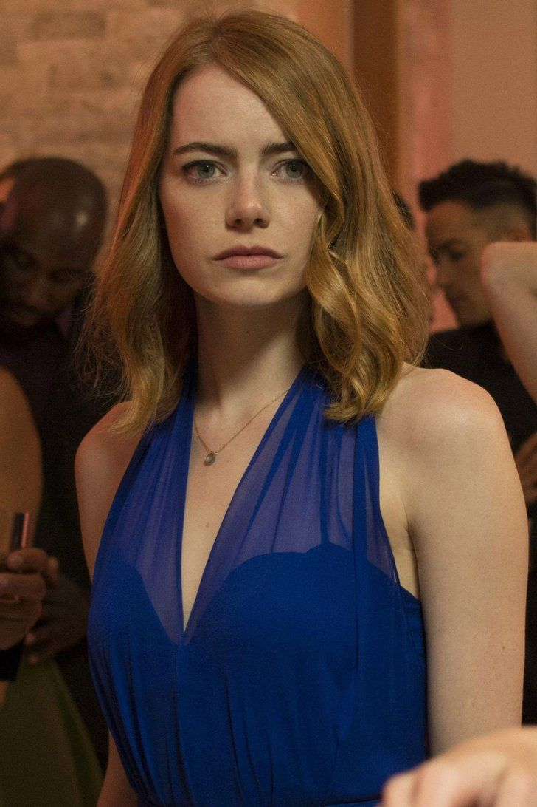
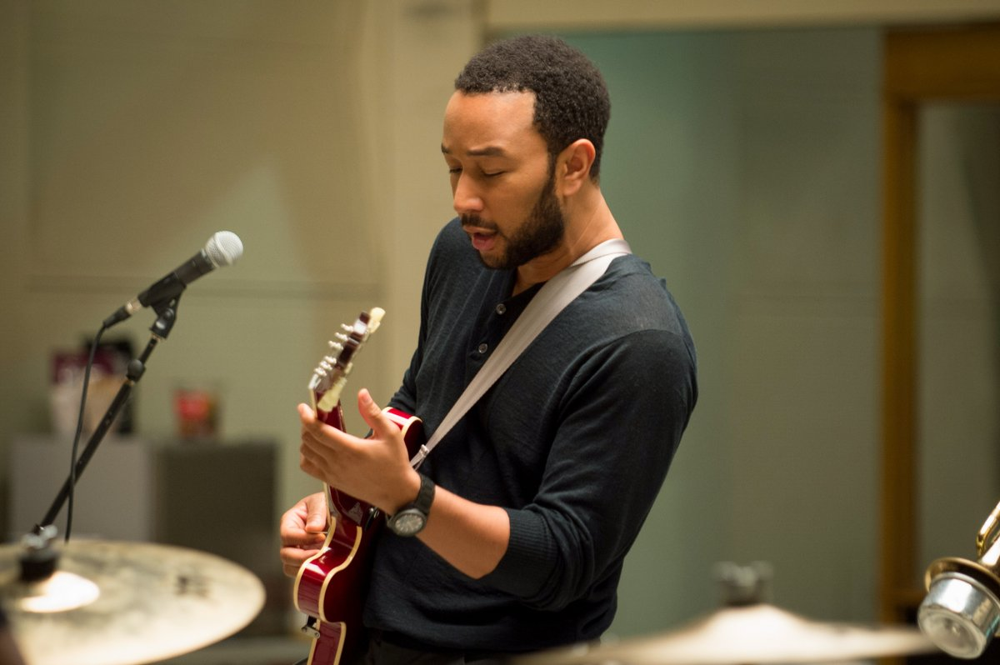

Sebastian
Ryan Gosling como Sebastian Wilder, un hombre amante del jazz que desea abrir su propio club y tocar la música que le gusta. Trabaja en un restaurante en el cual no consigue éxito. Muy pronto será despedido al no ceñirse a las canciones que el dueño quería que tocase, la víspera de Navidad. Pero ese mismo día, cambia su vida al conocer a Mia
Mia
Emma Stone como Mia Dolan, una camarera que trabaja en una cafetería de la Warner Bros. mientras espera ser descubierta para que pueda escribir y protagonizar el tipo de entretenimiento que no es cómico que nadie haga. Aunque sus sueños no están lejos, sus audiciones como actriz no dan resultado. Cuando conoce a Sebastian, comenzará a luchar por sus sueños y una historia de un nuevo amor.
Keith
John Legend como Keith es el cantante de la banda en la que Sebastian estaba temporalmente. A Sebastian no le gustaba, por su extraño enfoque del jazz.